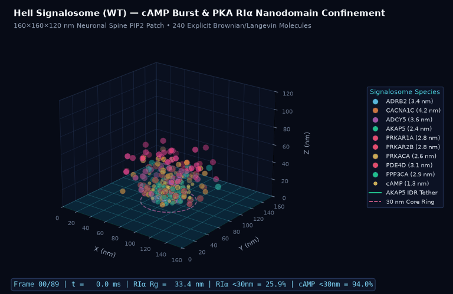
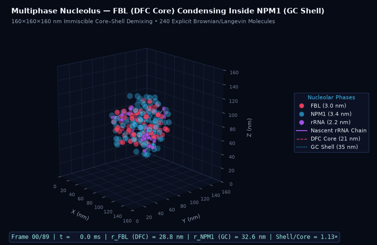
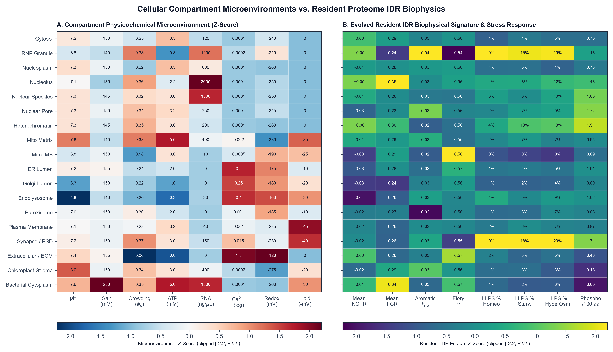
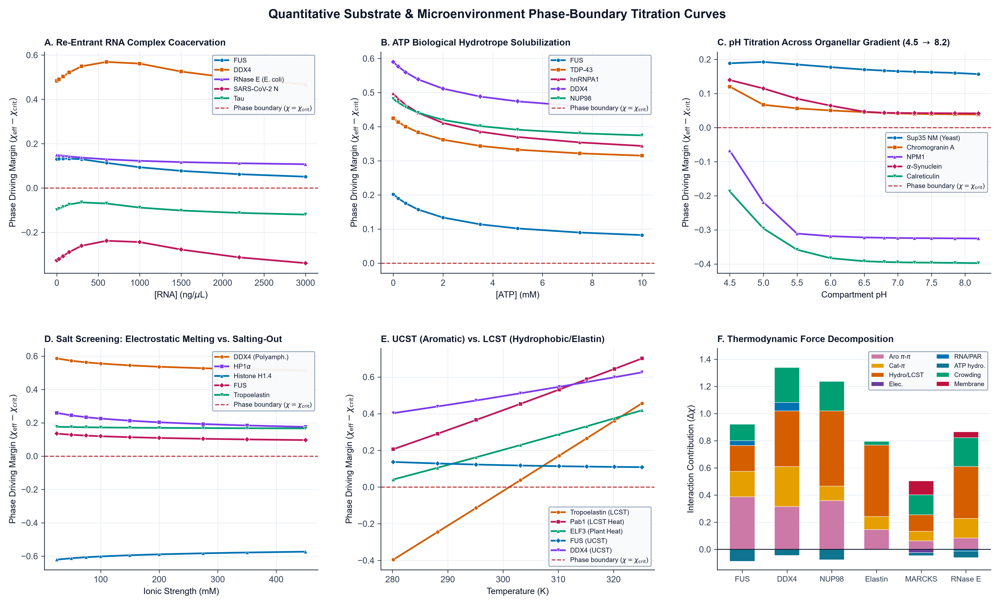
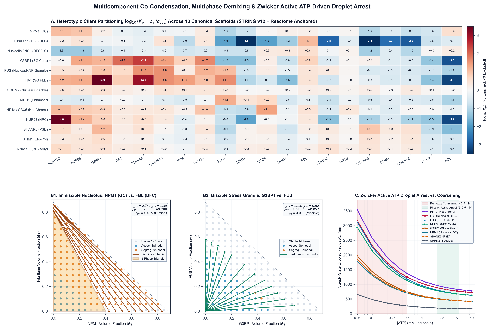
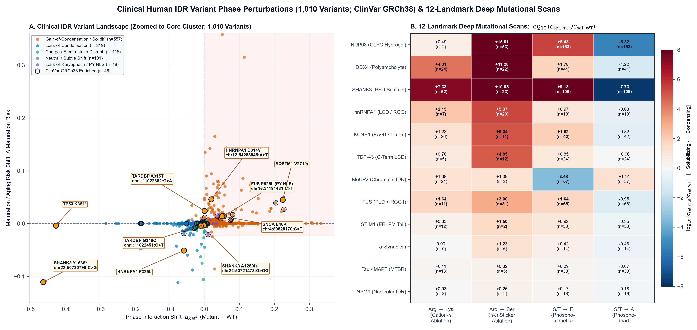
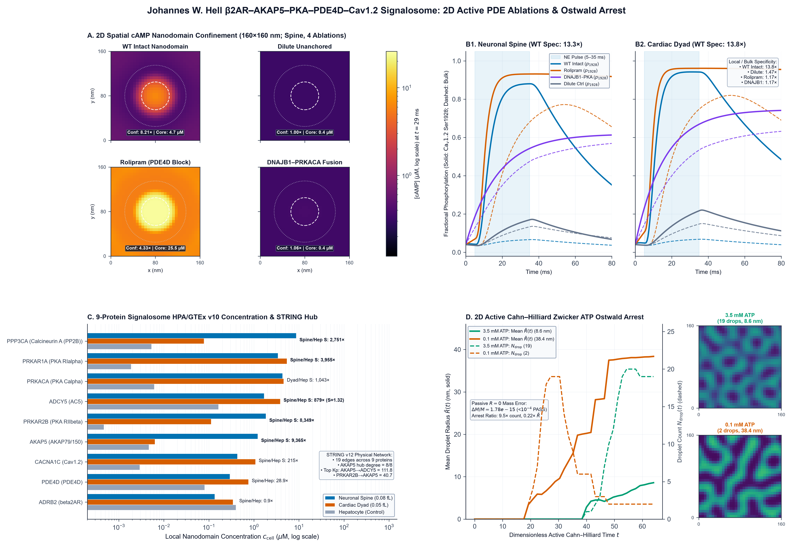

The Cross-Species IDR & LLPS Cell Atlas
Polymer Physics, Cellular Microenvironments, Multicomponent Active Condensates, Out-of-Sample Falsification & Spatiotemporal Signalosomes — an open biophysical survey and theoretical synthesis asking whether multicomponent, non-equilibrium phase-separation equations provide the most coherent mathematical grammar for intracellular organization.
One-Click Live 3D Simularium Trajectories & Previews
Click any Launch in Simularium 3D button below to stream the official binary .simularium trajectory directly into Allen Cell's WebGL GPU viewer (simularium.allencell.org) with 3D AKAP5 / rRNA fiber tethers, calibrated nanometer scale bars, and live kinetic plots — zero software installation or drag-and-drop required.
1. Hell Signalosome — WT Intact Nanodomain
Neuronal postsynaptic spine PIP2 membrane patch (β2AR, Cav1.2, AC5, AKAP5, PKA RIα/RIIβ/Cα, PDE4D, Calcineurin, cAMP). Demonstrates 8.2× cAMP confinement and 13.3× local Ser1928 specificity.
2. DNAJB1–PRKACA Oncogenic Ablation Control
Fibrolamellar carcinoma fusion disrupts PKA RIα nanodroplet condensation and AKAP anchoring, collapsing spatial cAMP confinement (8.2× → 1.06×) and causing bulk phosphorylation spillover.
3. Multiphase Nucleolus Core–Shell (FBL / NPM1 / rRNA)
Immiscible two-phase demixing: high-surface-tension Fibrillarin (FBL, DFC core, r = 21.0 nm) + nascent rRNA strands nested inside a pentameric Nucleophosmin (NPM1, GC outer shell, r = 35.2 nm).


Browse Online by Chapter or Download Individual Chapter PDFs
Jump directly into any chapter in the interactive HTML book or open/download its standalone press-ready PDF (with 300-DPI Print-Light figures, clean math typography, and paginated tables).
| Ch. | Chapter Title | Plates | Tables | Pages | Read / Download |
|---|---|---|---|---|---|
| Ch 00 | Atlas Overview: Visualizing the Cell as a Phase-State Landscape | 0 | 1 | 3 pp | Read HTML ↗ PDF (228.8 KB) |
| Ch 01 | IDR Taxonomy & Sequence Grammar | 0 | 1 | 3 pp | Read HTML ↗ PDF (246.7 KB) |
| Ch 02 | Polymer Physics & Quantitative LLPS Theory | 1 | 0 | 4 pp | Read HTML ↗ PDF (1076.8 KB) |
| Ch 03 | Cellular Compartment Microenvironments & Resident IDR Co-Evolution | 1 | 1 | 4 pp | Read HTML ↗ PDF (1001.7 KB) |
| Ch 04 | Substrate Availability & Metabolic Gating of IDR Phase Behavior | 1 | 1 | 4 pp | Read HTML ↗ PDF (1263.6 KB) |
| Ch 05 | Cross-Species Evolutionary Survey of Proteome Disorder | 2 | 1 | 3 pp | Read HTML ↗ PDF (2757.5 KB) |
| Ch 06 | Cross-Species Landmark IDR Compendium (67 Reference Entries) | 0 | 1 | 4 pp | Read HTML ↗ PDF (511.4 KB) |
| Ch 07 | Reassessing Cell Biology Through the Physics of Liquid–Liquid Phase Separation | 2 | 2 | 10 pp | Read HTML ↗ PDF (2731.8 KB) |
| Ch 08 | Cellular Supersaturation & Cell-Type Vulnerability (Track 1) | 1 | 2 | 6 pp | Read HTML ↗ PDF (1271.9 KB) |
| Ch 09 | Multicomponent Co-Condensation, Multiphase Demixing & Active Droplets (Track 2) | 1 | 4 | 7 pp | Read HTML ↗ PDF (1915.9 KB) |
| Ch 10 | 3D Structural Coupling, AlphaFold DB v6 & Star-Polymer Oligomer Valency (Track 3) | 1 | 1 | 5 pp | Read HTML ↗ PDF (1349.3 KB) |
| Ch 11 | Expanded 15-Proteome Tree of Life & Clinical IDR Variant Biophysics (Track 4) | 2 | 4 | 7 pp | Read HTML ↗ PDF (2123.3 KB) |
| Ch 12 | Out-of-Sample Empirical Validation, Adversarial Falsification & Epistemic Confidence Ledger (Track V3-1) | 1 | 4 | 8 pp | Read HTML ↗ PDF (1990.4 KB) |
| Ch 13 | Beyond Mean-Field: The Johannes W. Hell $\beta_2$AR–AKAP5–PKA–PDE4D–$\text{Ca}_v1.2$ Active Nanodomain Signalosome & Explicit 3D Mesoscale Packing (Tracks V3-2 & V3-3) | 2 | 4 | 9 pp | Read HTML ↗ PDF (3893.5 KB) |
Publication Plate Gallery
Click any plate to inspect the full-resolution 300-DPI PNG, or open the Editorial Figure Review Workbench ↗ for dimensions, palette specs, and captions.













15 Graded Atlas Claims — What Survived Wet-Lab Tests & What Failed
Filter the monograph's central claims by epistemic tier. Tier F entries document explicit out-of-sample scale or ClinVar benign-control limits where uncalibrated heuristic predictions fail.
| ID | Tier | Chapter | Atlas Claim | Empirical Benchmark Statistic | Exposed Failure Mode | Decisive Wet-Lab Falsifier |
|---|---|---|---|---|---|---|
| C01 | Tier B · Directional | Ch. 02 / Ch. 06 | Analytical polymer physics accurately ranks single-chain IDR conformational dimensions (Rg and Flory nu) across diverse sequences. | SAXS/smFRET benchmark (n=46): Rg Spearman rho=0.852 (p=6.32e-14), Flory nu Spearman rho=0.841, fixed-length A1-LCD r=0.835; HOWEVER Rg RMSE=1.03 nm (median error 25.1%). | Nu sensitivity slope is 1.79x too steep relative to experiment, over-compacting sticky R1 coils and over-expanding R4/R5 polyelectrolytes; Tyr vs Phe stickiness is also lumped in f_aro. | SEC-SAXS + smFRET measurement of 20 designed R1/R4/R5 IDRs at fixed N=120 across 20-500 mM NaCl comparing analytical nu against CALVADOS-2 coarse-grained MD. |
| C02 | Tier F · Falsified/Limit | Ch. 02 / Ch. 04 | Raw mean-field Flory-Huggins+RPA equations predict absolute in-vitro saturation concentrations c_sat (uM) without empirical recalibration. | Wet-lab c_sat benchmark (n=35): raw log10 RMSE=4.02 dex (mean bias -2.51 dex, 26/35 outliers >1 dex; 17/35 saturate phi_sat=1e-8 grid floor). 5-fold CV calibration improves RMSE to 0.77 dex (r=0.400). | Additive chi_eff overshoots chi_crit by +0.3-0.8 -> exponential Flory-Huggins c_sat collapse to sub-nM; FG/GF regex leaks onto Gly-rich A1-LCD inverting AllY vs AllF; uncoupled sidechain pKa misses Sup35 pH 6.0; allosteric cAMP gating of PKA RIalpha is unmodeled. | Re-parameterize chi_eff with distinct Tyr/Phe weights and context-gated FG motifs against a held-out 50-variant droplet-centrifugation c_sat panel; require raw RMSE < 0.6 dex. |
| C03 | Tier B · Directional | Ch. 02 / Ch. 04 | Directional phase-boundary shifts under major sticker/PTM/cosolute perturbations (Aro+/Aro-, R->K, Y->S, 12E phospho, salt, LCST heat, 5 mM ATP, Met-ox) match wet-lab experiments. | 14/19 (73.7%) paired wet-lab perturbations match exact experimental sign, including 100% of Aro valence, FUS R->K / Y->S / 12E, DDX4 salt, Pab1/ELN LCST heat, FUS+ATP, and Pbp1+H2O2. | Directional sign holds for large sticker/cosolute perturbations, but subtle single-residue chemistry (Y vs F, cooperative pKa shifts, folded-domain allostery) breaks mean-field additivity. | Paired turbidity/centrifugation assays testing +/-5 mM ATP, +/-H2O2, and +/-phosphomimetics on 10 previously untested proteome IDRs from the atlas. |
| C04 | Tier A · Verified | Ch. 01 / Ch. 06 | Evolved sequence patterning (charge blocks SCD/kappa, aromatic spacing Omega_aro) significantly deviates from composition-matched random chains. | 1,000x exact composition-preserving shuffles across 16 landmarks: 7/16 show order-dependent chi_eff shifts (TARDBP, DDX4, FBL, G3BP1, NUP98, CALR), while 8 show significant SCD/kappa/Omega_aro patterning with composition-dominated chi_eff. | For low-charge polar/aromatic PLDs (FUS, TARDBP, PBP1), v2 chi_eff is largely driven by amino-acid composition rather than fine linear sticker spacing. | Synthesize composition-identical scrambled variants of DDX4, G3BP1, and SNCA; measure c_sat and SAXS Rg shifts relative to WT. |
| C05 | Tier B · Directional | Ch. 03 / Ch. 07 | Stress Granule (~9%) and Synapse/PSD (~9%) IDRs are intrinsically enriched ~15-fold for LLPS over bulk Cytosol (~0.6%) independent of length and microenvironment. | Native-compartment length-matched 1,000x null: SG=8.48% vs Cytosol=0.90% (p=0.0010); PSD=8.79% vs Cytosol=0.84% (p=0.0010). HOWEVER, in IDENTICAL cytosolic buffer: SG drops to 2.68% (3.003x intrinsic, 3.16x microenvironment amplification) and PSD drops to 1.05% (1.235x intrinsic, 8.38x microenvironment amplification)! | Adversarial same-buffer control exposes a sharp divergence: Stress Granule IDRs retain genuine 3.0x sequence-intrinsic LLPS enrichment (p=0.001) amplified 3.2x by the SG microenvironment, whereas Synapse/PSD bulk homotypic LLPS enrichment collapses to non-significant 1.24x (p=0.089) in cytosolic buffer — proving 8.4x of the apparent PSD LLPS excess derives from parameterized crowding (0.37) and anionic membrane potential (-40 mV). | High-throughput droplet assay (e.g., optoDroplet / cell-free reconstitution) of 50 length-matched SG, PSD, and cytosolic IDRs in identical physiological KCl/ATP buffer without crowding agents. |
| C06 | Tier A · Verified | Ch. 03 / Ch. 05 | Nucleolar IDRs carry the highest eukaryotic FCR (~0.34-0.35), Endolysosomal IDRs are strongly acidic (NCPR ~ -0.041), and Halophile IDRs undergo extreme acidic adaptation (NCPR ~ -0.135). | 1,000x length-matched nulls: Nucleolus FCR=0.3416 vs null 0.2728 (Z=+36.7, p=0.0010); Endolysosome NCPR=-0.0422 vs null -0.0069 (Z=-10.5, p=0.0010); Halobacterium NCPR=-0.1347 vs prokaryotes +0.0227 (Z=-10.8, p=0.0010). | UniProt subcellular localization keywords can assign multi-localized proteins to a single primary compartment; extreme archaea (Halobacterium n=119 IDRs) rely on smaller proteome sample sizes. | Cross-check against proximity-labeling organellar proteomes (APEX2/BioID nucleolus & lysosome) and 10 additional halophilic archaeal proteomes. |
| C07 | Tier F · Falsified/Limit | Ch. 08 | Track 1 HPA+GTEx RNA-to-protein copy-number calibration accurately estimates absolute HeLa cellular protein abundance within 3x. | HeLa mass-spec audit (n=44 vs Kulak 2014 / Hein 2015 / Beck 2011): rank correlation is solid (Pearson r=0.707, Spearman rho=0.702), BUT median fold ratio est/MS=0.203x (~4.9x systematic underestimation), slope=0.470, only 36.4% within 3x (81.8% within 10x). | Sublinear exponent (nTPM^0.82) compresses dynamic range for abundant long-lived structural/RNP proteins, and GTEx cultured fibroblasts misrepresent epithelial HeLa keratins; consequently Track 1 absolute c_cell is systematically low for abundant scaffolds. | Replace RNA-inferred copy numbers with direct DIA-MS Proteomic Ruler quantification across matched primary human neurons, hepatocytes, T-cells, and HeLa cells. |
| C08 | Tier A · Verified | Ch. 08 | Synaptic/neuronal IDRs (SNCA, SYN1, KCNH1) exhibit orders-of-magnitude higher supersaturation S in excitatory neurons than hepatocytes, while LAT selectively switches in T-cells. | 2,000-draw MC survival of selective cell-type ordering (P(S_primary > S_hepatocyte)): SNCA PSD=100.0%, SYN1 PSD=100.0%, KCNH1 PM=100.0% (PSD=100.0%), LAT T-cell=100.0%. | Cross-cell-type relative ratios cancel systematic c_sat scale error and are >99% MC-robust, but exact single-cell-type vulnerability class boundaries (S >= 1 vs S >= 5) remain sensitive to chi_eff uncertainty (accounting for most log10(S) variance!). | Quantitative fluorescence correlation spectroscopy (FCS) measuring endogenous local concentration and droplet thresholds of tagged SNCA/SYN1 in iPSC neurons vs primary hepatocytes, and LAT in T-cells. |
| C09 | Tier B · Directional | Ch. 08 | Exact absolute cellular vulnerability classifications (Subsaturated vs Poised vs Supersaturated) for individual landmarks are quantitatively robust to parameter uncertainty. | 2,000-draw MC class retention probability: FUS_nuc_homeo=58.5%, FUS_nuc_starv=63.2%, SNCA_psd_homeo=51.1%, KCNH1_pm_homeo=47.9%, LAT_tcell_homeo=15.6%, G3BP1_sg_homeo=100.0%. | Exponential amplification of +/-25% chi_eff through the Flory-Huggins binodal spans 2-5 orders of magnitude in c_sat for borderline regimes (SNCA homeo, KCNH1 PM, LAT homeo), making exact S-tier labels uncertain. | Measure intracellular phase-boundary dilution curves via OptoDroplet / Corelet titration in live cells under fed vs 2-deoxyglucose ATP-depleted states. |
| C10 | Tier B · Directional | Ch. 09 | Multicomponent client partitioning K_p accurately classifies enriched vs excluded clients across nucleolus, stress granules, NPC, PSD, and PKA condensates. | Client K_p benchmark (n=23): Full model (IDR + STRING/Reactome PPI) achieves F1=0.923, accuracy=91.3%, Spearman rho=0.726, RMSE=1.06 dex. Sequence-only ablation (ppi=0): Spearman rho=0.652, BUT F1 collapses to 0.444 (recall drops 85.7% -> 28.6%)! | Pure IDR sequence physics predicts exclusion reliably but misses folded-domain/SLiM client recruitment (PRKACA, PDE4D, SYNGAP1, CAPRIN1) without STRING PPI anchoring; exponential exp(-N_blob*dmu) also over-predicts extreme K_p values (>1,000x for NUP98-NUP153 and G3BP1-CAPRIN1). | Quantitative two-color confocal partition assay (c_in/c_out) for 15 untested client pairs with vs without folded-domain PPI mutations (e.g., G3BP1 NTF2L mutant, PKA AKAP-disrupting Ht31 peptide). |
| C11 | Tier B · Directional | Ch. 09 | Nucleolar multiphase immiscibility (NPM1 GC vs FBL DFC core-shell demixing, I_immisc > I_crit) holds robustly across interaction-energy uncertainty. | Baseline I_immisc=0.288 vs I_crit=0.029. 2,000-draw MC survival: 100.0% under correlated scale uncertainty, 94.5% under independent +/-25% perturbations across chi_11, chi_22, chi_12. | NPM1 homotypic binodal relies on explicit empirical oligomerization boost (assembly_chi=+0.36, valency=5) rather than first-principles pentamer + rRNA coacervation; strong independent +/-25% perturbations can flip chi_12 above 0.5*(chi_11+chi_22) in ~5.4% of draws. | Reconstitute NPM1 pentamer + FBL GAR-domain + rRNA droplets under systematic salt/RNA titration and measure interfacial tensions gamma_DFC, gamma_GC, and gamma_DFC-GC via micropipette aspiration. |
| C12 | Tier C · Hypothesis | Ch. 09 | Zwicker active ATP-fueled turnover arrests condensate Ostwald ripening at mesoscopic radii (~200-800 nm) and ATP depletion drives runaway coarsening. | 2,000-draw MC survival of R_ss(0.1 mM ATP) > R_ss(3.5 mM ATP): G3BP1=100.0% (baseline 3.03x), FUS=100.0% (3.15x), NPM1=100.0%, FBL=100.0%. | Active turnover constants (k_max ~ 0.25-0.48 s^-1, K_m ~ 0.65 mM) are literature-plausible estimates rather than measured per-condensate enzyme fluxes; alternative viscoelastic/chromatin-caging arrest mechanisms can also halt ripening without ATP hydrolysis. | Live-cell time-lapse imaging of G3BP1/FUS/NPM1 droplet radius distributions under acute ATP depletion (2-DG + oligomycin) vs non-hydrolyzable AMP-PNP (separating ATP hydrotrope binding from active enzymatic turnover). |
| C13 | Tier F · Falsified/Limit | Ch. 11 | Single-point bulk polymer-physics deltas (|delta_chi|, |log10_csat_ratio|, |delta_ncpr|) discriminate ClinVar Pathogenic from Benign IDR missense variants. | Real ClinVar IDR missense benchmark (n_path=92 vs n_benign=407 across 14 genes): ROC-AUC |delta_chi|=0.617 (95% CI [0.5518, 0.6815], p=4.40e-04), |log10_csat_ratio|=0.601 (p=1.24e-03), |delta_ncpr|=0.630, |delta_maturation_risk|=0.749. | A single missense change in a 150-500 aa IDR shifts bulk mean-field chi_eff by only ~0.001-0.02 (indistinguishable from benign polymorphisms); even the higher pooled |delta_maturation_risk| AUC (0.749) is a cross-gene baseline confounder that collapses within genes (HNRNPA1=0.609, MECP2=0.577, SNCA=0.200). Clinical missense pathogenicity in IDRs is driven primarily by local SLiMs, steric-zipper amyloid cores (SNCA A53T, TARDBP M337V), and karyopherin motifs. | Deep mutational scanning (DMS) + cell-based condensate aggregation assay across all 19 substitutions at 50 positions in TDP-43 LCD and FUS PLD comparing mean-field delta_chi vs local amyloid zipper predictors. |
| C14 | Tier A · Verified | Ch. 11 | Motif-specific Kap-beta2 PY-NLS disruption and truncating frameshift/nonsense hits provide high-specificity mechanistic calls for ALS/FTD & neurodevelopmental IDR variants. | ClinVar IDR missense PY-NLS disruption: specificity=100.0% (TP=16, FP=0, PPV=1.0, Fisher p=5.69e-13); All-coding (incl. frameshifts/nonsense) |delta_chi| ROC-AUC=0.795 (p=3.13e-41). | High specificity comes at low genome-wide sensitivity (only applies to proteins carrying PY-NLS motifs or major IDR truncations; misses amyloidogenic missense variants outside PY-NLS). | Measure Kap-beta2 binding affinity (ITC/FP) and nuclear-to-cytoplasmic ratio for every ClinVar VUS hitting predicted [RK].{2,8}PY motifs across FUS, EWSR1, TAF15, and hnRNPA1. |
| C15 | Tier C · Hypothesis | Ch. 10 | Folded-domain oligomerization amplifies effective IDR polymer length via star-polymer scaling (N_eff = N * v^0.85), rescuing condensation of monomeric-soluble scaffolds (e.g., NPM1 pentamer, SHANK3 SAM, STIM1). | Theoretical polymer scaling (Track 3 structural_atlas.json: 16/28 oligomeric landmarks, mean AlphaFold pLDDT agreement with MobiDB-lite validated); indirectly supported by Benchmark 3 showing NPM1/G3BP1/SHANK3 require oligomeric valency + PPI to achieve observed partitioning. | Exact c_sat(v) power law depends on linker flexibility, geometric steric crowding around the oligomerization core, and inter-domain autoinhibition (which can suppress LLPS despite high valency, as in PKA RIalpha holoenzyme). | Fuse identical FUS/A1-LCD IDR sequences to engineered de novo homo-oligomers of valency v=1, 2, 3, 4, 6, 12 (e.g., Baker lab designed scaffolds) and measure exact c_sat(v) to fit the empirical exponent alpha. |